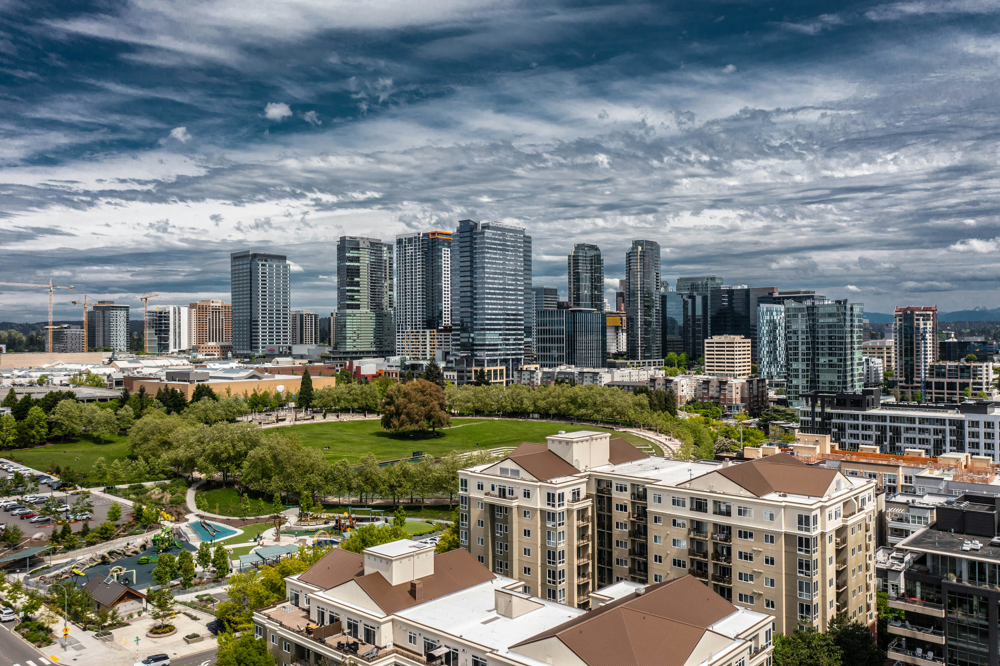
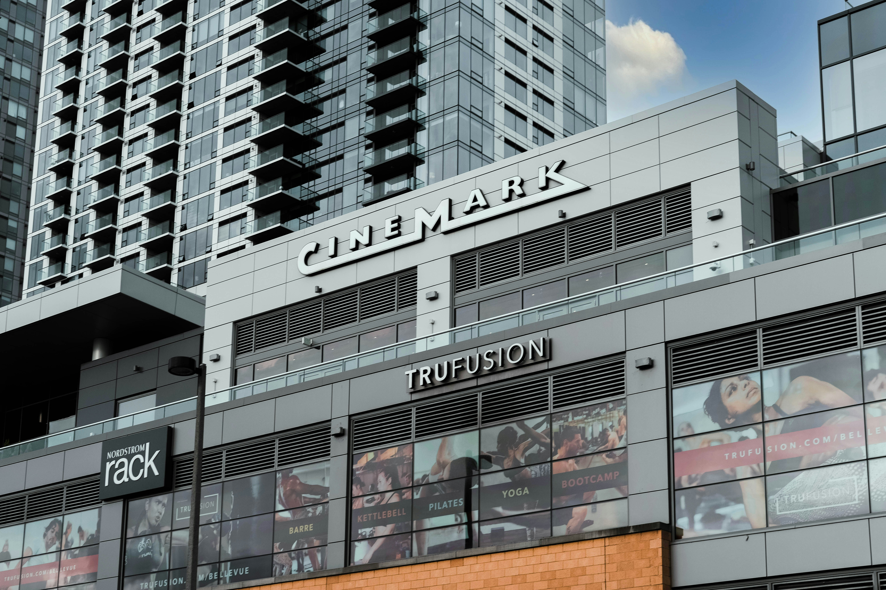
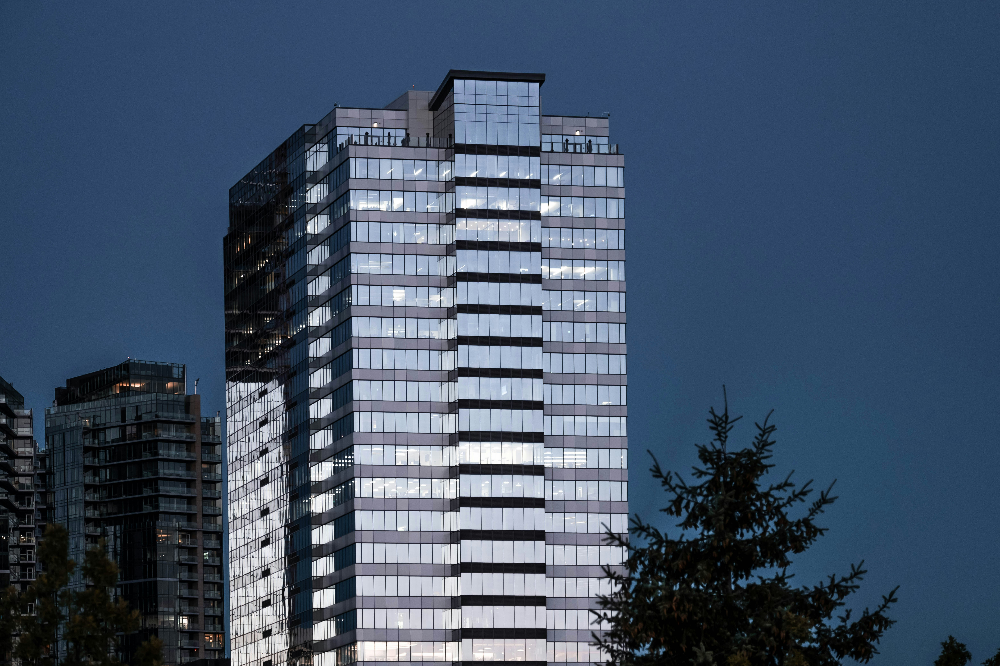
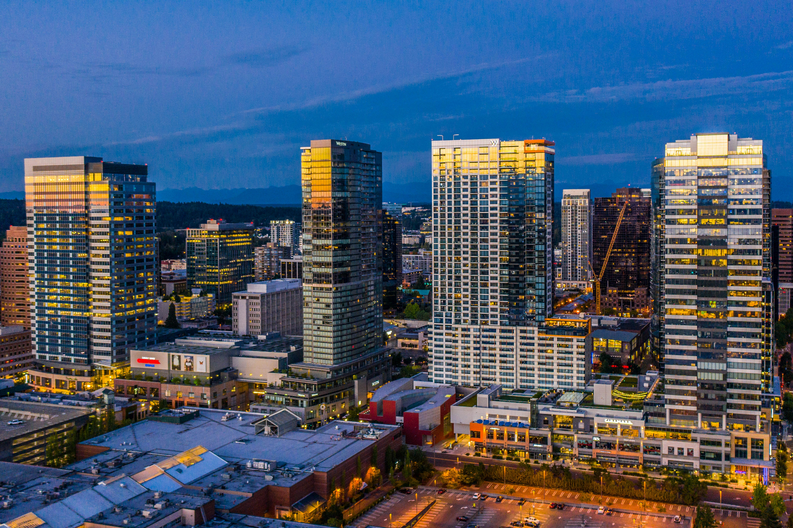

Why Bellevue?
My favorite city is Bellevue because it feels like one of those cities that is balanced. It has the energy of a growing downtown but if you travel 4 blocks, you're on the water, surrounded by trees, and mountain views. Visitors can grab lunch either in Old Bellevue or their modern shopping center, Bellevue Square, and end the day with the sunset over Lake Washington. It feels clean and calm, which is great for anyone with a family.
Outdoor Recreation
Photo by Zac Gudakov

One of the best features of Bellevue is how easy you can get outside without ever leaving the city. Even when downtown, you're a couple blocks from a wide open green space, relaxing paths, and waterfront views. If you want a day that has that "PNW" feel, you can stay in Bellevue and still get a mix of city and nature.
My Favorite Parks in Bellevue
- Bellevue Downtown Park : Located in the middle of downtown, it features a wide open lawn with a circular walking path, and large waterfall feature. It's a popular gathering area where visitors can relax, exercise, and socialize. The central location makes it accessible from any area of the city.
- Meydenbauer Bay Park : This park sits along Lake Washington and offers waterfront access, dock walking, and dense wooded walk ways. Visitors can enjoy watching boats come and go from the yacht club, swim in the summer, or simply sit near the shore. The nearby location in relation to the city makes it very convenient for even short visits.
- Bellevue Botanical Garden : The Bellevue Botanical Garden features peaceful trails with maintained plants. The garden highlights the seasonal blooms and themed landscape sections. It provides the most calm and scenic escape out of these three parks, especially during spring and summer months.
The Bellevue Collection
Photo by Zac Gudakov

The Bellevue Collection is the center of downtown shopping and dining, and it's one of the easiest areas to spend your time when you visit. It includes the Bellevue mall and nearby connected buildings, so you are able to walk between stores and areas. With all walkways undercover, it's especially convenient on rainy days.
To see what's open and plan your visit, check the official Bellevue Collection website.
Ascend Prime Steak & Sushi
Photo by Zac Gudakov

Ascend is a high-rise restaurant that feels like the "special night out" spot in Bellevue. It's known for its cascading skyline views or not only Bellevue but also Seattle. Along with the modern atmosphere, it shows the upscale side of downtown. It's the kind of place that makes Bellevue feel like it has its own character, not just a suburb outside of Seattle.
More details here: Ascend Prime Steak & Sushi.
Bellevue Arts Museum
Photo by Zac Gudakov

The Bellevue Arts Museum is a great location for those that want something cultural. With a focus on craft, and design, the exhibits feel different from the typical museum and are often changing. It's a nice way to break up a day of shopping and walking.
To check current exhibits and hours, visit the Bellevue Arts Museum website.